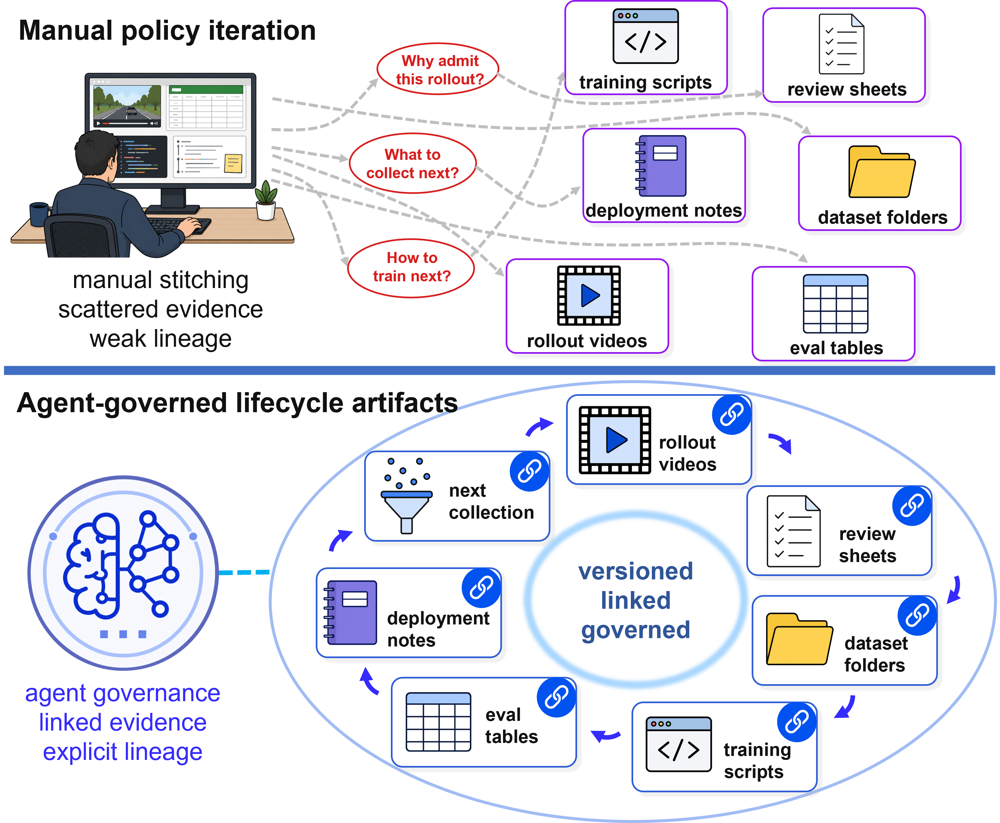
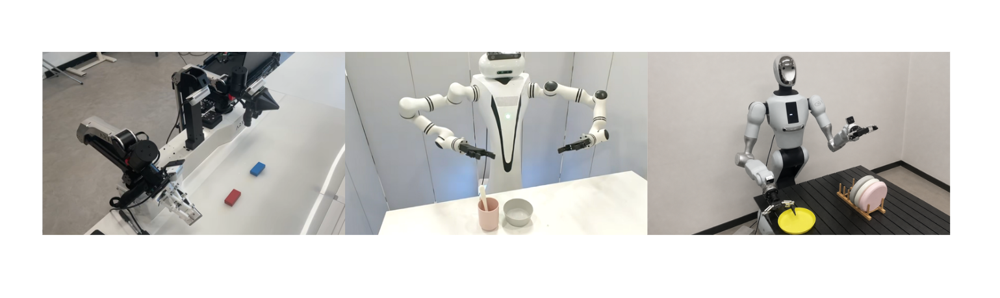
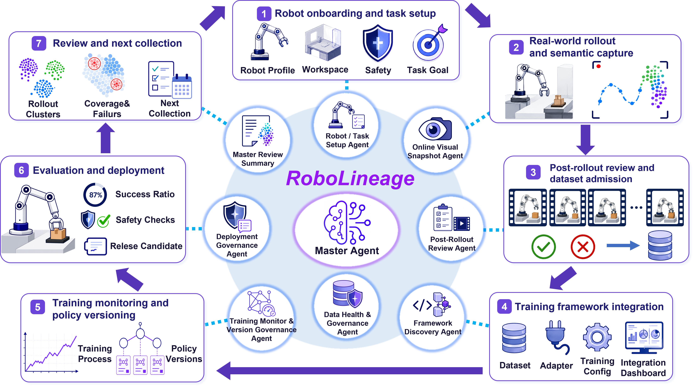
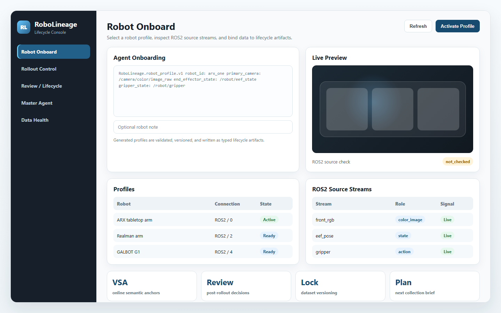
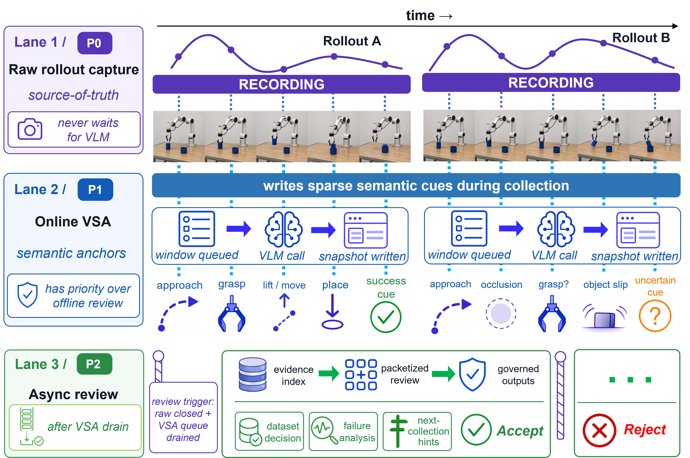
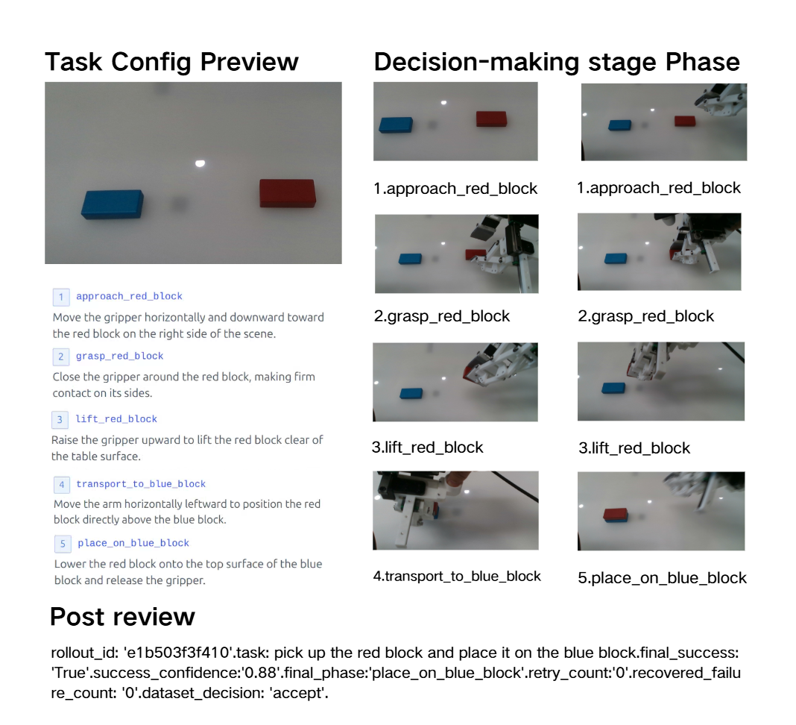
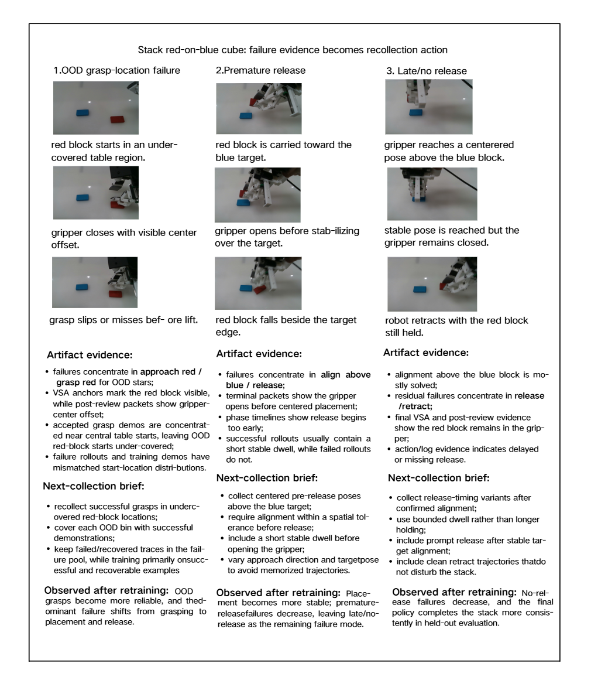

Lifecycle artifacts
Rollouts, reviews, datasets, training records, evaluations, and recollection plans remain linked across iterations.
CoRL 2026
Agents connect evidence, data, and decisions across robot learning iterations.
1TranscEngram 2The University of Hong Kong 3Beijing Institute of Technology


RoboLineage organizes robot learning as a connected workflow. Agents work under shared contracts that define their evidence, responsibilities, and handoffs. Lineage links the resulting artifacts, so later stages and collection rounds can use the history behind each dataset and policy.
We present RoboLineage, an agent-native data lifecycle governance system for robot policy iteration. Modern robot policies improve through repeated cycles of data collection and retraining. Teams still rely on local tools, scripts, and expert memory to review the evidence and decide which data to use or which policy to release. RoboLineage records how rollout evidence leads to dataset changes and how those datasets produce policy versions. Evaluation and release decisions remain linked to that history, including the plan for the next collection round.
Agents interpret embodied evidence and prepare accepted data for existing training stacks. They also assess dataset readiness and carry context across iterations through typed, validated artifacts. In real-robot manipulation workflows, RoboLineage makes routine policy iteration faster and more auditable while maintaining downstream policy performance.
Rollouts, reviews, datasets, training records, evaluations, and recollection plans remain linked across iterations.
Agents follow explicit responsibilities, evidence requirements, and validated handoffs across the learning workflow.
Later collection plans use dataset coverage, policy ancestry, and earlier evaluation evidence.
RoboLineage follows the policy iteration loop from robot onboarding and semantic capture to review, dataset admission, training integration, evaluation, and next collection.

Selected deployment clips span visual placement, transfer, tool use, sorting, wide-workspace manipulation, and contact-rich articulation.
Block placement.
Container transfer.
Contact-rich articulation.
Tool use.
Tennis-ball and golf-ball sorting.
Far-to-near transfer.
Across 25 tasks and 500 rollouts, online visual anchors and packetized post-rollout review improve data-use decisions.
| Metric | Direct video-to-VLM | RoboLineage |
|---|---|---|
| Outcome accuracy | 78.4 | 96.0 |
| Failure-phase accuracy | 58.0 | 88.0 |
| Data-use route accuracy | 79.6 | 96.4 |
| Bad-data leakage | 16.0 | 2.1 |
Route accuracy is agreement with expert consensus across all 500 rollouts, before operator overrides. Leakage is the fraction of 194 expert-rejected rollouts admitted to the primary training manifest.
Active human time falls by 58.3% per 30-rollout cycle across 12 matched sessions. Physical collection time remains similar; the savings come from onboarding, review, and training preparation.
Timing measures pre-training active human time, including blocking waits, after one-time robot and learner integration. GPU training and initial adapter development are excluded. Asynchronous review can overlap later collection (paper Figure 5 and Table 11).
Policy quality remains close in the tested settings: mean success is 92.7% with RoboLineage-selected data and 93.1% with human-selected data across eight tasks. Each workflow selects 60 demonstrations from the same 100-candidate pool per task and evaluates 60 trials (paper Figure 4).
The frontend console exposes robot onboarding, source-stream checks, lifecycle review, Data Health, and Master Agent summaries through the same artifact interface used by the backend runtime.

Raw capture remains the source of truth, online VSA writes sparse semantic anchors during collection, and asynchronous review turns evidence packets into dataset decisions and failure notes. The plates below show how task phase, outcome, uncertainty, and failure evidence are surfaced across representative tasks.


Open full-size plateFailure analysis becomes data-collection action when review evidence is connected to dataset state, evaluation outcomes, and prior policy iterations. In the stacking case, repeated failures become targeted requests for out-of-distribution grasp locations, centered pre-release placement, and bounded-dwell release examples.

| Collection planner | Cube stacking | Drawer opening |
|---|---|---|
| Initial policy | 25.0 | 26.7 |
| Random collection | 36.7 | 37.8 |
| Failure-phase heuristic | 66.7 | 62.2 |
| No cross-round memory | 70.0 | 66.7 |
| RoboLineage | 83.3 | 78.9 |
| Human expert | 86.7 | 81.1 |
Three independent runs per method and task. Each round adds 30 accepted demonstrations and uses 30 diagnostic trials; the final test uses 60 separate trials per run. The no-memory planner sees the current review evidence but not earlier lifecycle context. Equal accepted-demo counts do not imply equal collection attempts.
Accepted to CoRL 2026. Read the camera-ready paper or visit arXiv:2606.22142.
@inproceedings{luo2026robolineage,
title = {RoboLineage: Agent-Native Data Lifecycle Governance Across Robot Policy Iterations},
author = {Luo, Qian and Guo, Wentao and Qin, Zhennan and Guo, Nanchun and Zhao, Yunhan and Ma, Yi and Yang, Yanchao},
booktitle = {Conference on Robot Learning (CoRL)},
year = {2026},
eprint = {2606.22142},
archivePrefix = {arXiv},
url = {https://arxiv.org/abs/2606.22142}
}